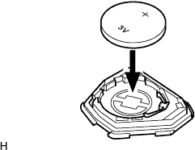

Installation of transmitsutabatsuri (wireless key) |
| 1. Transmitter battery installation |
|  |
Attach the battery [lithium battery (CR2016)] as shown in the figure.
Attach the cover.
| 2. Door control transmitter module set installation |
Return the module to the transmitter housing case, hold the transmitter housing cover and put it on.
Confirm that the LED lights up when one of the switches of the door control transmitter module set is pressed on the module.